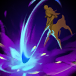

起手裝備
 增幅典籍
增幅典籍

黎安卓、峽谷、帽子、血書、雅瑪蘭保留，與7.3b表一致；血書配持續命中，不再疊另一件同功能百分比穿透。


五件成裝與鞋子分開列示；起手與核心是購買路線，不是額外佔用的成裝欄位。鞋子完成時機仍依對線壓力與回城金錢調整。


相位衝擊、熱忱戰鬥、斷切、血脈、卓越與最新表一致，跑速進出與持續傷害相配。


閃現保留進場角度與撤退彈性，重擊維持打野必備。 本英雄以法系鬥士／高速拉打／群體睡眠定位使用；7.3b不改重擊主動斬殺值，需看進化與充能。
加點優先：Q > W > E
保留Q > W > E，逐級表與7.3b打野分頁一致；大絕仍在5、9、13級，基本技能各四點。
技能命中英雄或野怪會施加夢塵，持續造成最大生命比例魔法傷害；對大型野怪與英雄施加時會回復生命。
被動：技能命中會疊加跑速；主動旋轉香爐造成範圍魔法傷害，外圈額外造成真實傷害。

蓄力後猛擊目標區域造成魔法傷害，中心命中會造成大幅提高的傷害。
投擲種籽，落地造成魔法傷害、揭露與緩速；若沒有命中會沿地面持續滾動直到撞到敵人或地形。
讓所有帶有夢塵的敵方英雄逐漸睏倦後陷入睡眠；被傷害喚醒時會受到額外魔法傷害。
Q 外圈與跑速疊層支援持續魔傷，血書與隊友魔傷搭配而非重複購買虛空。已核對既有技能摘要、連招操作條件及前中後期說明；沒有足夠證據改寫其餘完整技能成長數值。
1技外圈 → 普攻 → 3技緩速 → 1技再掃
始終用一技外圈命中，疊跑速後繞開敵方技能，再回頭重複輸出。
1技命中多人 → 4技睡眠 → 2技中心 → 1技收尾
一技先替多人附上夢塵再開大，敵人睡著後用二技中心喚醒造成最高爆發。
3技遠距命中 → 4技 → 閃現接近 → 2技中心 → 1技
三技命中核心即可遠距開大，睡眠形成後閃現接二技中心與一技。
一技外圈會造成額外真實傷害，並透過被動跑速層數保持拉打。前期單挑較弱，優先完整清野接近五級，利用走位讓一技同時命中整個營地。
黎安卓的折磨 → 峽谷製造者 → 死亡之帽為預設前段順序。Q 外圈與跑速疊層支援持續魔傷，血書與隊友魔傷搭配而非重複購買虛空。後兩格依敵方實際威脅替換；先完成關鍵核心，再決定防裝與穿透，支援物件前確認重擊充能及隊友線權。
維持四層跑速在戰場外圈反覆進出，避免站在原地硬吃控制。二技中心傷害極高，但應在敵人睡眠、被控制或無位移時使用。
以同頁打野威脅名單嘉文四世、菲艾、慨影更新，有利名單僅是既有機制判斷，排除與威脅重複者；莉莉亞入侵仍看兩側線權、血量及關鍵技能，不當作固定單挑勝率。
對局名單是機制與分路判斷，不代表固定勝率；需同時看雙方熟練度、兵線與陣容。
替換以本頁五件成裝為基準；同一格建議擇一。二、三級鞋是一條升級線，換鞋時整條同步；魔劍進化不占新欄位。
高
觸發：敵方前排物防／魔防成形，或近身普攻威脅明顯。
雅瑪蘭守護像 → 虛空之杖
敵方已堆魔防時補虛空之杖，避免只繼續增加面板魔攻。
敵方已堆魔防時補虛空之杖，避免只繼續增加面板魔攻。
高
觸發：主要死亡原因是一輪集火，無法完成輸出或控制。
同一格有多個建議時擇一；核心成形後依實際威脅調整。
高
觸發：敵方法術先手或持續魔法傷害成為主要威脅。
雅瑪蘭守護像 → 女妖面紗
主要死亡原因是單次技能開戰時改女妖；護盾被消耗後仍要後退。
主要死亡原因是單次技能開戰時改女妖；護盾被消耗後仍要後退。
高
觸發：魔法傷害與控制鏈影響生存或輸出。
魔力之靴 → 水星之靴
魔法傷害及可被韌性縮短的控制占主導時，鞋線整條改水星之靴→鎖鏈軍靴。
魔法傷害及可被韌性縮短的控制占主導時，鞋線整條改水星之靴→鎖鏈軍靴。
韌性不能縮短所有控制，例如擊飛；護盾與解控各有適用條件。
高
觸發：敵人持續回復令集火失敗。
雅瑪蘭守護像 → 黑魔禁書
敵方回復妨礙集火且隊友無法維持重創時，改黑魔禁書；可先用遺忘寶珠過渡。
敵方回復妨礙集火且隊友無法維持重創時，改黑魔禁書；可先用遺忘寶珠過渡。
本頁校正版本：7.3b；校正日期：2026-10-15。
參考來源標示版本：7.3b
Tier、出裝、符文與對局是本站編輯建議，不是官方推薦或已驗證台服勝率。v118延續同日v117的逐路複核，針對來源缺口及數值衝突再核對；未宣稱所有技能已在手機內逐級實測。
評級理由：A調整為S：7.3b同路指南及Tier表均S；持續魔傷、清營轉線與多人睡眠形成完整團戰定位，仍需避開嘉文／菲艾等指定進場。
Riot 官方資料 ↗ · WildRiftFire 參考攻略 ↗
重新讀取正文的版本欄為7.3b，並核對配裝、符文、逐級技能；不是只讀頁面標題。
A調整為S：7.3b同路指南及Tier表均S；持續魔傷、清營轉線與多人睡眠形成完整團戰定位，仍需避開嘉文／菲艾等指定進場。
黎安卓、峽谷、帽子、血書、雅瑪蘭保留，與7.3b表一致；血書配持續命中，不再疊另一件同功能百分比穿透。
相位衝擊、熱忱戰鬥、斷切、血脈、卓越與最新表一致，跑速進出與持續傷害相配。
保留Q > W > E，逐級表與7.3b打野分頁一致；大絕仍在5、9、13級，基本技能各四點。